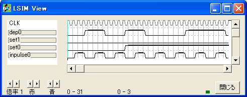

{ =============================================== }
{ 分周器 }
{ =============================================== }
logicname sample
{ =============================================== }
{ 実効譜 }
{ =============================================== }
entity main
input inpulse;
input set[2];
output dep;
bitr regpulse[2];
bitr count[4];
if (inpulse)
if (regpulse==2)
regpulse=regpulse;
else
regpulse=regpulse+1;
endif
endif
if (regpulse.0)
count=count+1;
else
count=count;
endif
switch(set)
case 0: dep=count.0; { 2 分周 }
case 1: dep=count.1; { 4 分周 }
case 2: dep=count.2; { 8 分周 }
case 3: dep=count.3; { 16分周 }
endswitch
ende
{ =============================================== }
{ 機能実行譜 }
{ =============================================== }
entity sim
output inpulse;
output set[2];
output dep;
bitr tc[5];
part main(inpulse,set,dep)
tc=tc+1;
if (tc>10) set=1; endif
switch(tc)
case 1: inpulse=1;
case 2: inpulse=1;
case 5: inpulse=1;
case 6 : inpulse=1;
case 9 : inpulse=1;
case 10: inpulse=1;
case 13: inpulse=1;
case 14: inpulse=1;
case 17: inpulse=1;
case 18: inpulse=1;
case 21: inpulse=1;
case 22: inpulse=1;
case 25: inpulse=1;
case 26: inpulse=1;
case 29: inpulse=1;
case 30: inpulse=1;
endswitch
ende
endlogic
